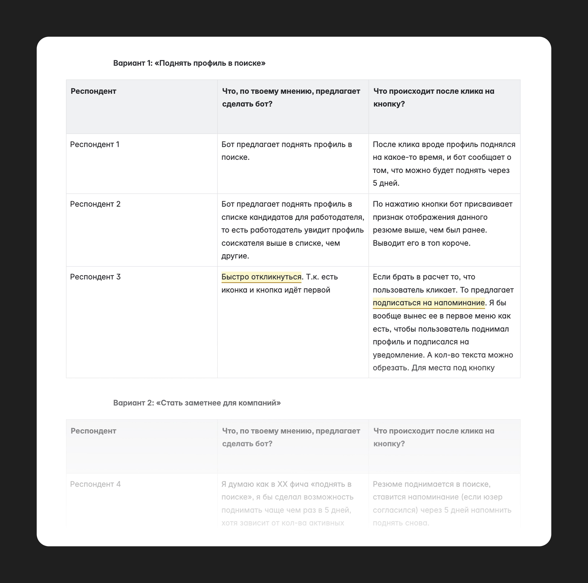
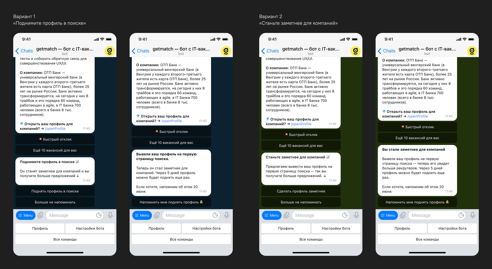
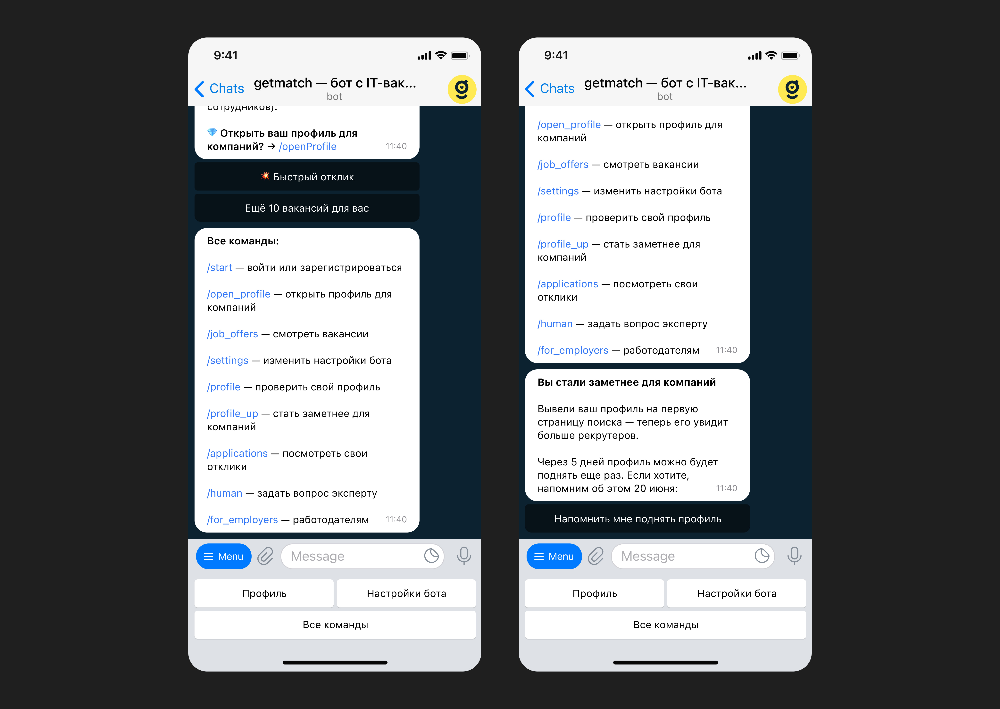
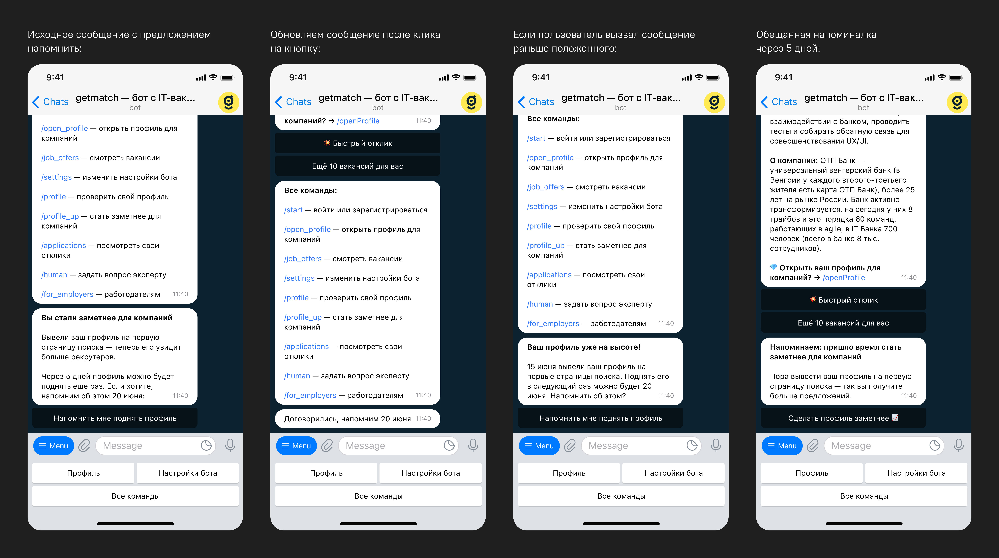
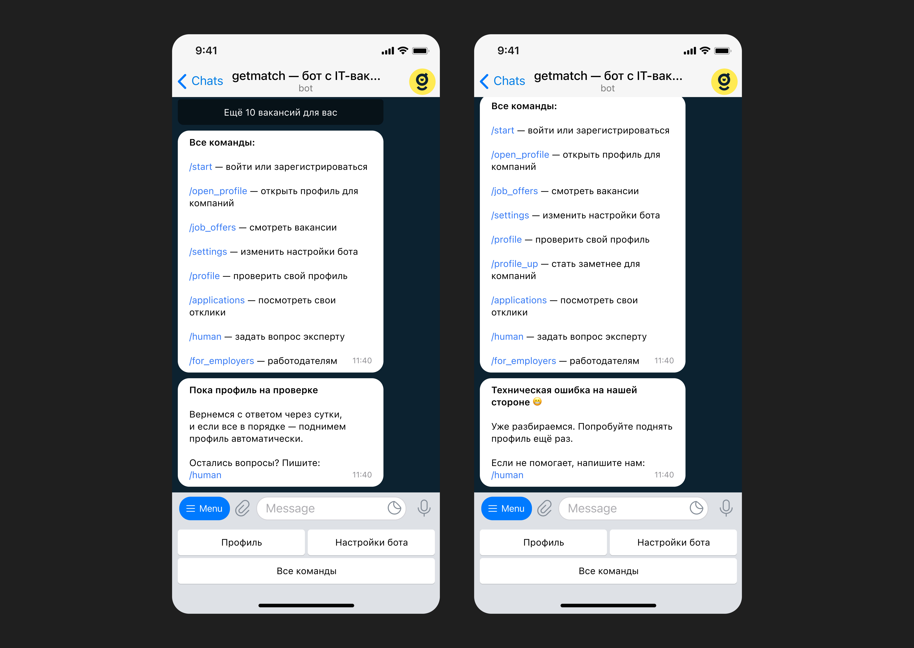
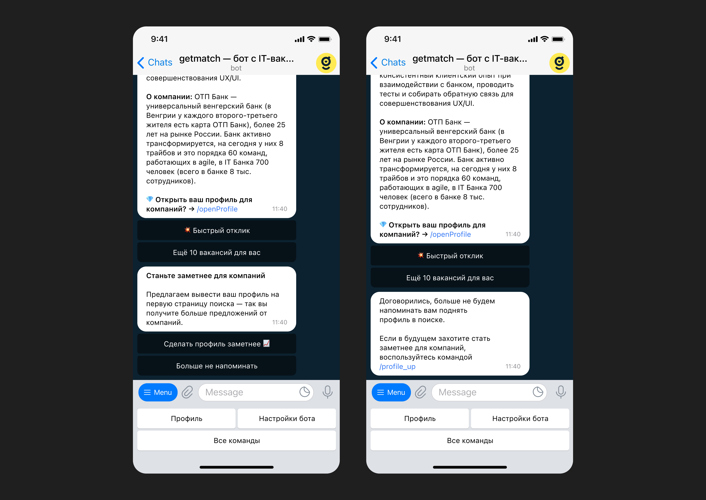

<!DOCTYPE html>
<html>
  <head>
    <meta charset="utf-8">
    <meta name="viewport" content="width=device-width, initial-scale=1.0">
    <meta property="og:type" content="article">
    <meta property="og:title" content="Поднятие профиля в getmatch • Артём Самсонов • Продуктовый дизайнер">
    <meta property="og:description" content="Инструмент, помогающий кандидатам стать заметнее для компаний, а рекрутерам — находить кандидатов из глубины ленты">
    <meta property="og:image" content="http://artemsamsonov.com/img/default.jpg">
    <link href="https://fonts.googleapis.com/icon?family=Material+Icons" rel="stylesheet">
    <link rel="stylesheet"><!-- Yandex.Metrika counter --> <script type="text/javascript" > (function(m,e,t,r,i,k,a){m[i]=m[i]||function(){(m[i].a=m[i].a||[]).push(arguments)}; m[i].l=1*new Date();k=e.createElement(t),a=e.getElementsByTagName(t)[0],k.async=1,k.src=r,a.parentNode.insertBefore(k,a)}) (window, document, "script", "https://mc.yandex.ru/metrika/tag.js", "ym"); ym(88097279, "init", { clickmap:true, trackLinks:true, accurateTrackBounce:true, webvisor:true }); </script> <noscript><div></div></noscript> <!-- /Yandex.Metrika counter -->
    <title>Поднятие профиля в getmatch • Артём Самсонов • Продуктовый дизайнер</title>
  <link href="./css/style.bundle.css" rel="stylesheet"></head>
</html>
<body class="body_light">
  <header class="header header_light">
    <div class="header__logo"><a href="index.html">Артём Самсонов</a></div>
  </header>
  <div class="content">
    <div class="article">
      <section>
        <h1>Поднятие профиля в getmatch</h1>
        <p class="article__annotation">На платформе getmatch рекрутерам доступен инструмент «Подборки» — закрытая база кандидатов, отобранных вручную специалистами нашего агентства. На исследовании заметили проблему — рекрутеры смотрят только новые профили, расположенные на первых двух страницах ленты. При этом в конце ленты находились хорошие кандидаты, готовые к общению с компаниями.</p>
        <h2>Решение</h2>
        <p> Спроектировали механику поднятия профиля в ленте. Кандидат, попавший в подборку, может поднять профиль раз в 5 дней, тем самым став заметнее для рекрутеров. Механику реализовали в телеграм-боте.</p>
        <p>Перед разработкой провели A/B-юзабилити-тест: совместно с UX-писателем создали два варианта текста и показали каждый из них пятерым пользователям. Первый вариант опирался на действие («поднять профиль»), второй — на потребность («стать заметнее для компаний») ↓</p>
        <p class="article__image"><a href="../img/getmatch-calc-01.jpg" target="_blank"></a><span class="article__image-caption">Таблица ответов</span></p>
        <p>Несмотря на то, что респонденты поняли оба варианта, победил второй флоу, опирающийся на пользовательскую проблему «хочу стать заметнее для компаний». Победил во многом из-за сходства с уже знакомым функционалом HeadHunter.</p>
        <p class="article__image"><a href="../img/getmatch-calc-02.jpg" target="_blank"></a><span class="article__image-caption">Победил вариант справа</span></p>
        <p>Стать заметнее можно, нажав на соответствующую команду в меню:</p>
        <p class="article__image"><a href="../img/getmatch-calc-03.jpg" target="_blank"></a></p>
        <p>Если кандидат уже становился заметнее, мы можем напомнить о возможности спустя пять дней:</p>
        <p class="article__image"><a href="../img/getmatch-calc-04.jpg" target="_blank"></a></p>
        <p>Стать заметнее могут только пользователи с открытым профилем. Перед открытием профиль модерирует наш специалист. Пока профиль проверяется, стать заметнее не получится. Для этого кейса запоминаем желание юзера и выполняем позже:</p>
        <p class="article__image"><a href="../img/getmatch-calc-05.jpg" target="_blank"></a><span class="article__image-caption">А на скриншоте справа — текст технической ошибки</span></p>
        <p>Если пользователю надоело становиться заметнее, он может попросить больше не напоминать ему об этой возможности:</p>
        <p class="article__image"><a href="../img/getmatch-calc-06.jpg" target="_blank"></a></p>
        <h2>Результаты</h2>
        <p>Благодаря поднятию профилей в ленте мы получили NDA дополнительных наймов в месяц (за каждый найм компания платит фиксированную цену). Старые кандидаты начали получать предложения — у них возродилось ощущение, что сервис живёт и работает.</p>
        <p>Однако, период в 5 дней оказался слишком частым. Некоторые пользователи подбрасывали свой профиль каждый раз и мозолили рекрутерам глаза, провоцируя их скрывать себя из ленты навсегда. Одновременно с этим рекрутерам стало тяжелее добираться до только-только добавленных кандидатов.</p>
        <p>Через месяц после релиза мы увеличили период до 15 дней и стали показывать поднятые профили после только-только добавленных. Метрики одобрения поднятых кандидатов немного упали, но всё равно остались выше изначальных значений.</p>
      </section>
    </div>
  </div>
<script type="text/javascript" src="./js/bundle.js"></script></body>